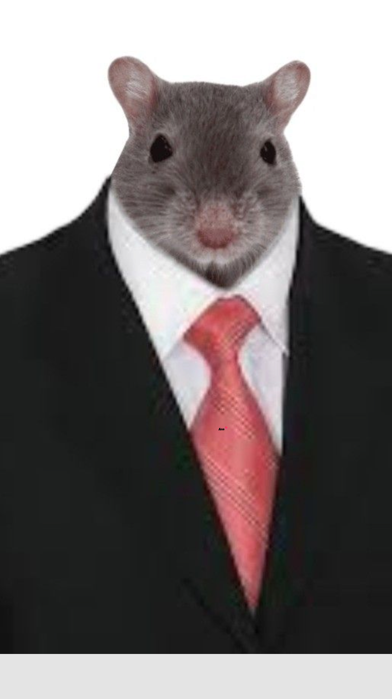
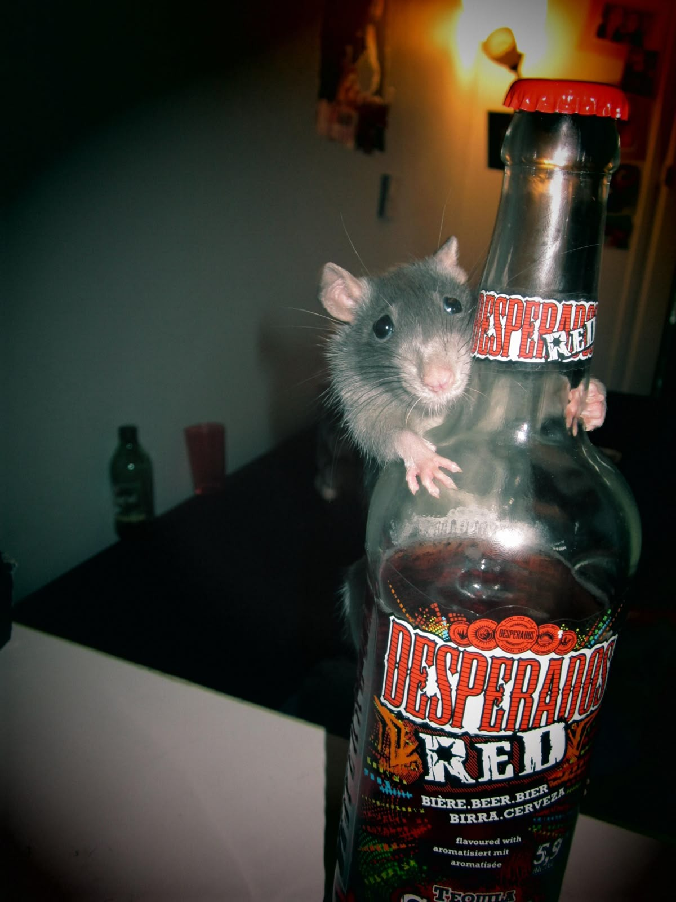
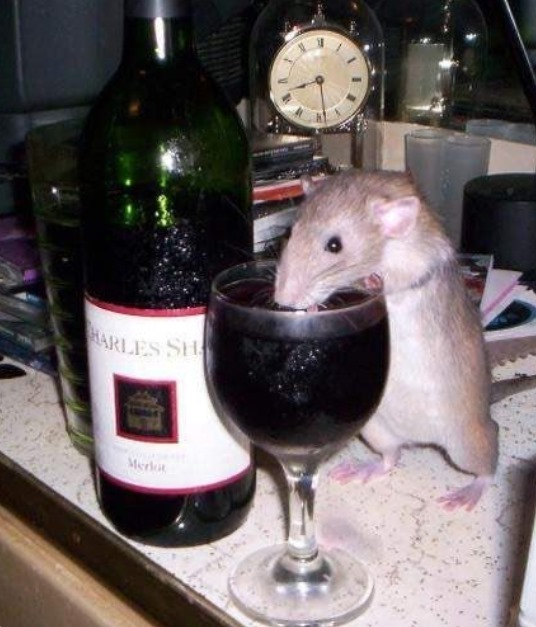
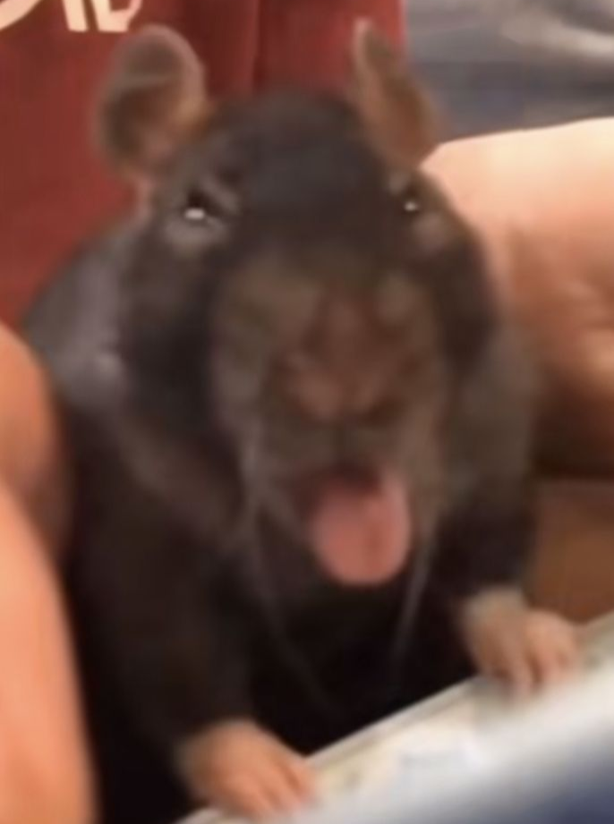
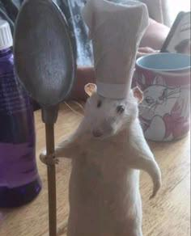
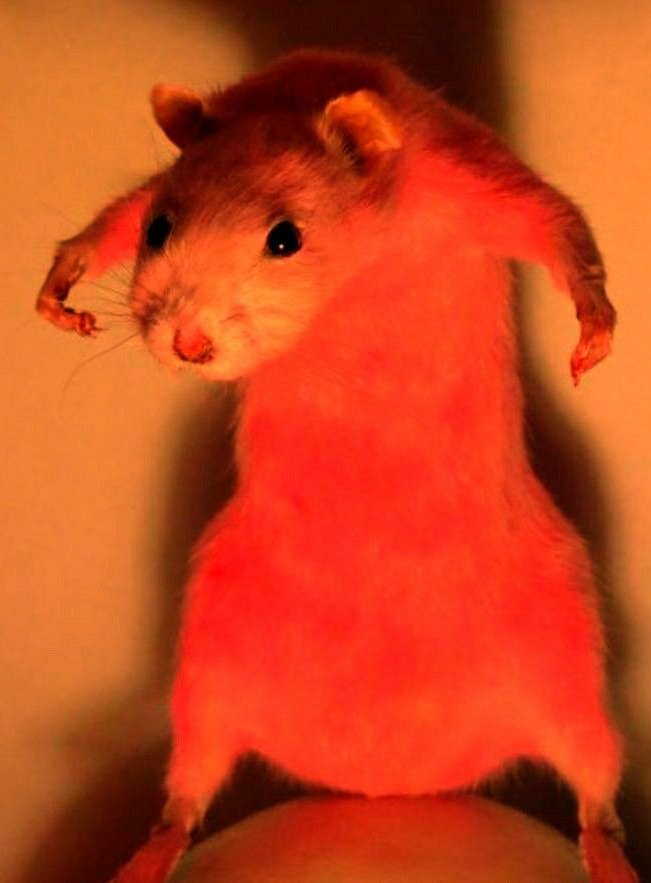
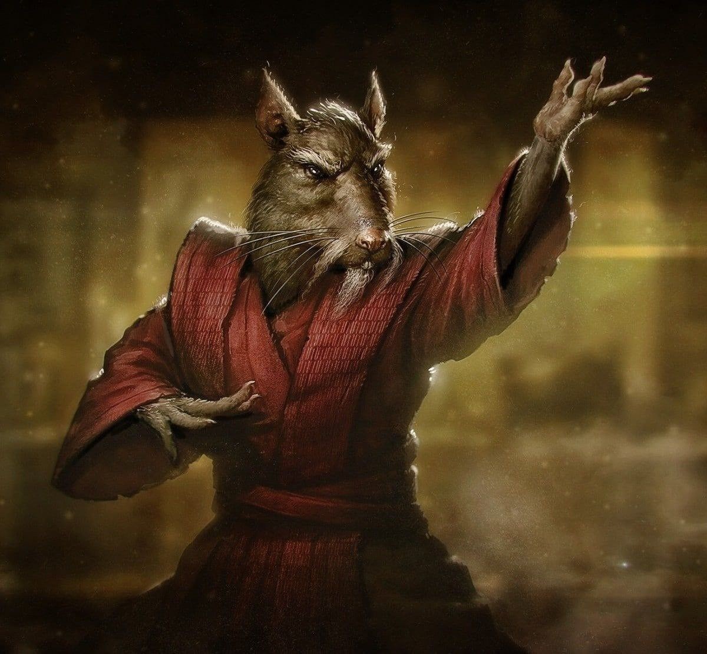

AKTIVE_EXPERTEN_EINHEIT

Die Fette Kanalratte
Das strategische Oberhaupt. Er wandelt die intuitive Energie von Ratcliff Schmauser in harte Daten um.

Der Kleine Mäuserich
Spezialisiert auf die Identifizierung subtiler Nuancen in der Fleischqualität und Brot-Elastizität.

Sir Nibblesworth
Ein Ästhet des Untergrunds. Er prüft die Resilienz von Saucen in den späten Nachtstunden.

Hässlicher Ratterich
Immun gegen herkömmliche gastronomische Gifte. Sichert das biologische Überleben des Rates.

Ratcliff jr.
Furchtloser Vorreiter. Er betritt Areale, die für normale Mäuseriche lebensgefährlich wären.

Nagerbert Klaut Münzen
Zuständig für die finale Vernichtung der Testsubjekte. Bekannt für seine gnadenlose Expertise.

Ratcliff Schmauser
Der Architekt des Systems. Seine Intuition ist das Fundament unserer gesamten wissenschaftlichen Arbeit.
Was eine Rattige Bande...